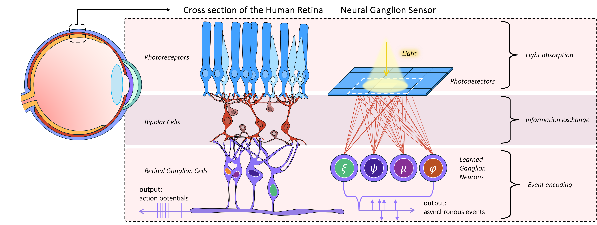

Neural Ganglion Sensors: Learning Task-specific Event Cameras
Inspired by the Neural Circuit of the Human Retina
Haley M. So and Gordon Wetzstein
Stanford University
Abstract:
Inspired by the data-efficient spiking mechanism of neurons in the human eye, event cameras were created to achieve high temporal resolution with minimal power and bandwidth requirements by emitting asynchronous, per-pixel intensity changes rather than conventional fixed-frame rate images. Unlike retinal ganglion cells (RGCs) in the human eye, however, which integrate signals from multiple photoreceptors within a receptive field to extract spatio-temporal features, conventional event cameras do not leverage local spatial context when deciding which events to fire. Moreover, the eye contains around 20 different kinds of RGCs operating in parallel, each attuned to different features or conditions. Inspired by this biological design, we introduce Neural Ganglion Sensors, an extension of traditional event cameras that learns task-specific spatio-temporal retinal kernels (i.e., RGC "events"). We evaluate our design on two challenging tasks: video interpolation and optical flow. Our results demonstrate that our biologically inspired sensing improves performance relative to conventional event cameras while reducing overall event bandwidth. These findings highlight the promise of RGC-inspired event sensors for edge devices and other low-power, real-time applications requiring efficient, high-resolution visual streams.
Overview:
Analogy between Neural Ganglion Sensors and the human retina: On the left, we show a simplified diagram of different layers in the human retina. Light hits the photoreceptors (rods and cones), of which there are about 100 million per eye. The signals get transferred and modulated through Bipolar cells along with additional Horizontal and Amacrine cells. In the end, the roughly 1 million Retinal Ganglion Cells (RGCs), receive signals from a small area on the retina, not just from a single photoreceptor. These RGCs look at the pattern of information to decide whether to send a spike signal to the brain. We see spatial and temporal pooling occurs in the first few layers of the retina to encode all the information into bandwidth efficient spiking potentials. On the right, we show our proposed Neural Ganglion Sensor, an event camera augmented to better match the human retina.
BibTeX:
@inproceedings{hmso2025NeuralGanglion,
title={Neural Ganglion Sensors: Learning Task-specific Event Cameras Inspired by the Neural Circuit of the Human Retina},
author={Haley M. So and Gordon Wetzstein},
booktitle={arxiv preprint arXiv:2504.13457},
month={April},
year={2025},
}